Creating and grading assignments#
This guide walks an instructor through the workflow for generating an assignment and preparing it for release to students.
Accessing the formgrader extension#
The formgrader extension provides the core access to nbgrader’s instructor tools. After the extension has been installed, you can access it through the command palette (using Command/Ctrl + Shift + c), then typing formgrader :
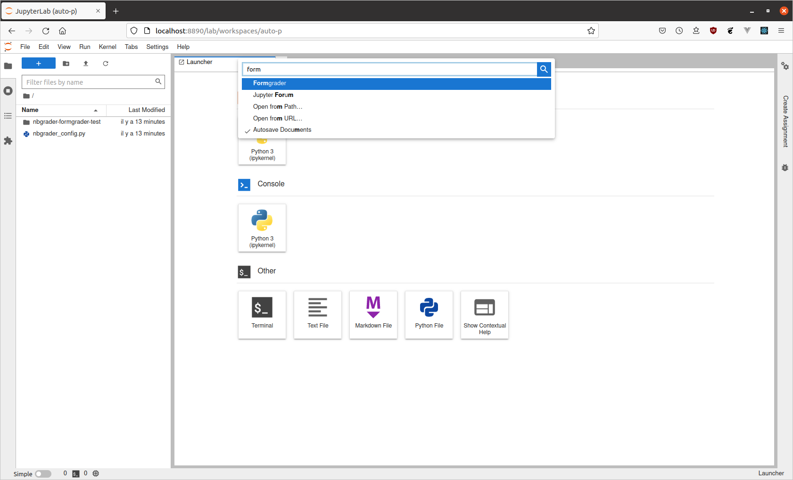
An new tab should open in Jupyter Lab :
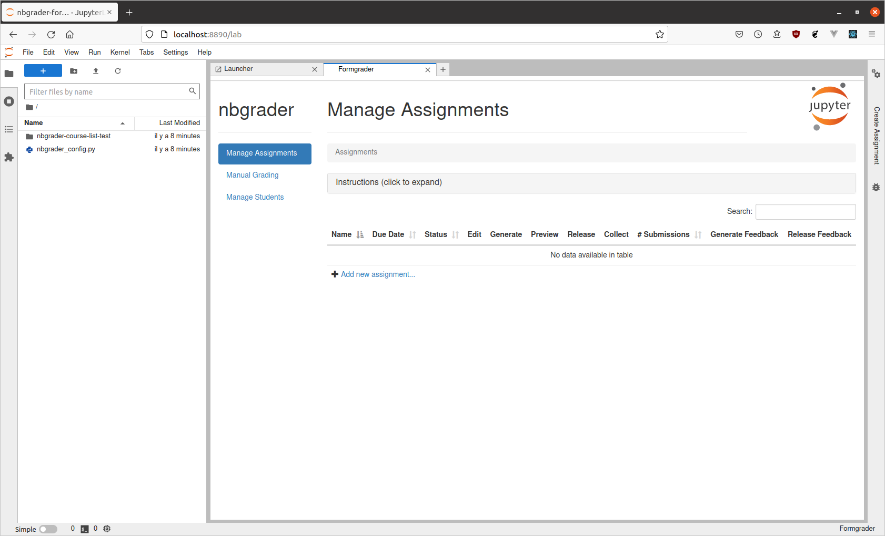
Creating a new assignment#
From the formgrader#
To create a new assignment, open the formgrader extension and click the “Add new assignment…” button at the bottom of the page. This will ask you to provide some information such as the name of the assignment and its due date. Clicking the name of the assignment will open the assignment directory in the file browser (left panel), where files can be added :
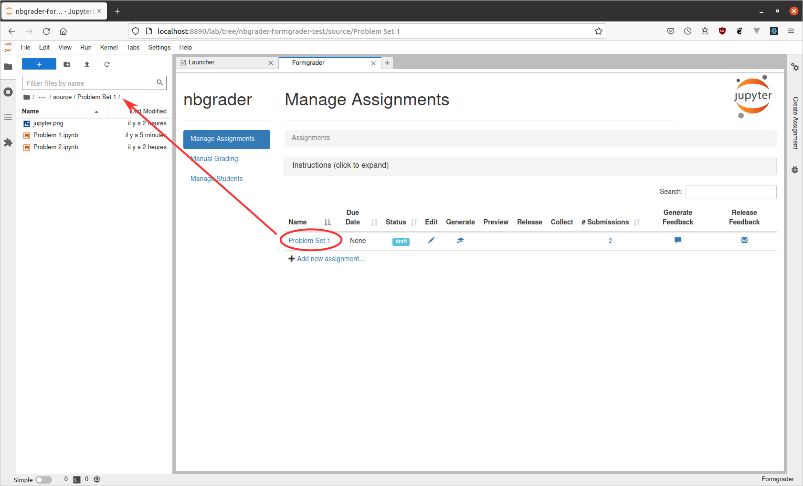
From the command line#
To simplify this example, two notebooks of the assignment have already been stored in the source/ps1 folder:
Developing assignments with the assignment toolbar#
Note: As you are developing your assignments, you should save them
into the source/{assignment_id}/ folder of the nbgrader hierarchy,
where assignment_id is the name of the assignment you are creating
(e.g. “ps1”).
Once the toolbar has been installed, you should see it the right panel:
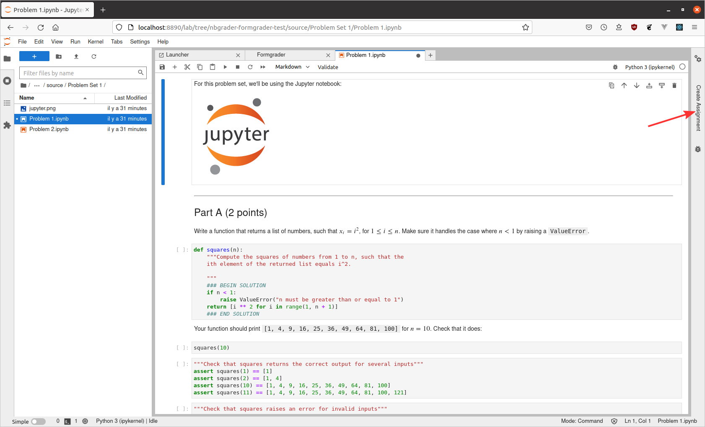
In the “Create Assignment” toolbar, each cell has its own nbgrader menu (the blue bars let you know which one is selected) :
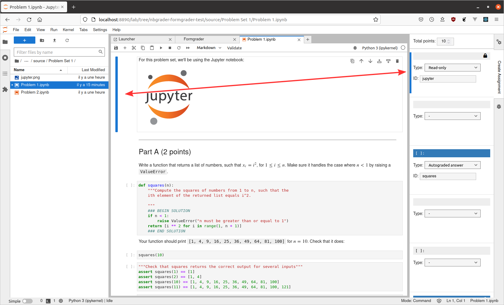
By default each cell will have a dropdown menu with the “-” item selected. For markdown cells, there are three additional options to choose from, either “Manually graded answer”, “Manually graded task” or “Read-only”:
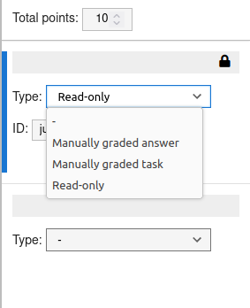
For code cells, there are five options to choose from, including “Manually graded answer”, “Manually graded task”, “Autograded answer”, “Autograder tests”, and “Read-only”:
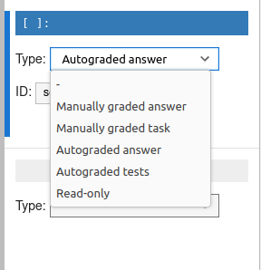
The following sections go into detail about the different cell types, and show cells that are taken from a complete example of an assignment generated with the nbgrader toolbar extension:
“Manually graded answer” cells#
If you select the “Manually graded answer” option (available for both markdown and code cells), the nbgrader extension will mark that cell as a cell that contains an answer that must be manually graded by a human grader. Here is an example of a manually graded answer cell:
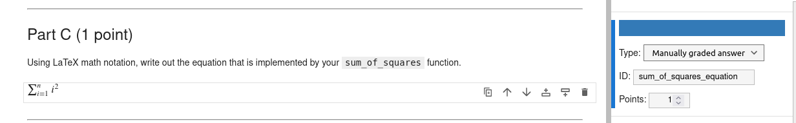
The most common use case for this type of cell is for written free-response answers (for example, which interpret the results of code that may have been written and/or executed above).
“Manually graded task” cells#
If you select the “Manually graded task” option (available for markdown cells), the nbgrader extension will mark that cell as a cell that contains the description of a task that students have to perform. They must be manually graded by a human grader. Here is an example of a manually graded answer cell:
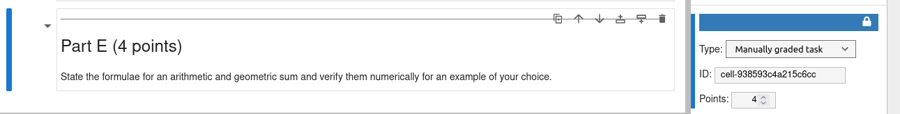
The difference with a manually graded answer is that the manually graded tasks cells are not edited by the student. A manually or automatically graded cell ask students to perform a task in one cell. A manually graded task asks students to perform a task with cells.
The common use case for this type of cell is for tasks that require the student to create several cells such as “Process the data and create a plot to illustrate your results.” or to contain notebook-wide tasks such as “adhere to the PEP8 style convention.”
“Manually graded task” cells with mark scheme#
A mark scheme can be created through the use of a
special syntax such as === BEGIN MARK SCHEME === and
=== END MARK SCHEME ===. The section of text between the two markers will be removed from the student version,
but will be visible at the grading stage and in the feedback.
“Autograded answer” cells#
If you select the “Autograded answer” option (available only for code cells), the nbgrader extension will mark that cell as a cell that contains an answer which will be autograded. Here is an example of an autograded graded answer cell:
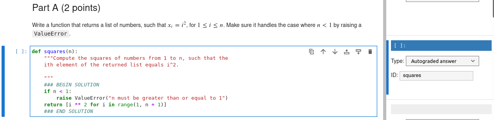
Unlike manually graded answers, autograded answers aren’t worth any points: instead, the points for autograded answers are specified for the particular tests that grade those answers. See the next section for further details.
“Autograder tests” cells#
If you select the “Autograder tests” option (available only for code cells), the nbgrader extension will mark that cell as a cell that contains tests to be run during autograding. Here is an example of two test cells:
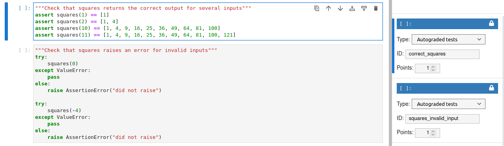
The lock icon on the right side of the assignment toolbar indicates that the tests are “read-only”. See the next section for further details on what this means.
“Autograder tests” cells with automatically generated test code#
Tests in “Autograder tests” cells can be automatically and dynamically generated through the use of the special syntax ### AUTOTEST and ### HASHED AUTOTEST. This syntax allows you to specify only the objects you want to test, rather than having to write the test code yourself manually; nbgrader will generate the test code for you. For example,
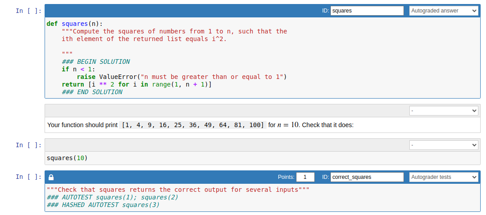
In this example, the instructor wants to test that the returned value of squares(1), squares(2), and squares(3) lines up with the value from the source copy. In the release copy, the above autotest statements will be converted to the following test code that the students see:
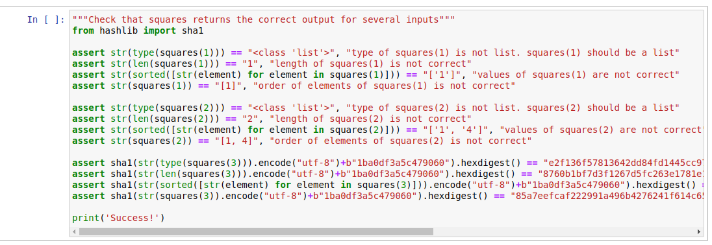
“Read-only” cells#
If you select the “Read-only” option (available for both code and markdown cells), the nbgrader extension will mark that cell as one that cannot be modified. This is indicated by a lock icon on the left side of the cell toolbar:
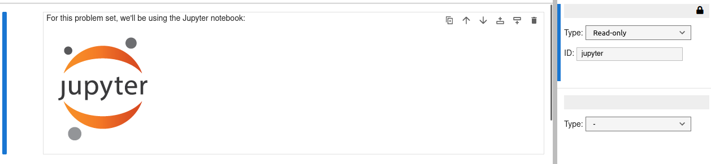
This functionality is particularly important for test cells, which are always marked as read-only. Because the mechanism for autograding is that students receive full credit if the tests pass, an easy way to get around this would be to simply delete or comment out the tests. This read-only functionality will reverse any such changes made by the student.
Validating the instructor version#
From the validate extension#
Ideally, the solutions in the instructor version should be correct and pass all the test cases to ensure that you are giving your students tests that they can actually pass. To verify this is the case, you can use the validate extension:
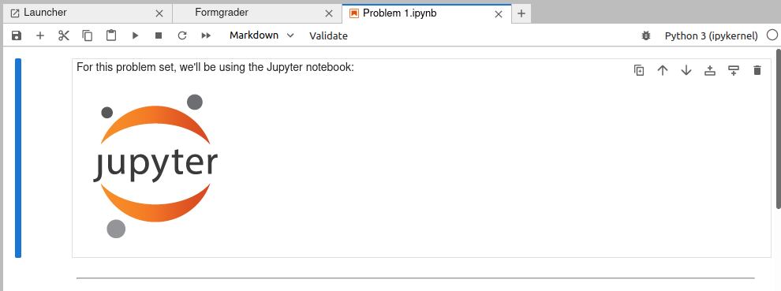
If your assignment passes all the tests, you’ll get a success pop-up:
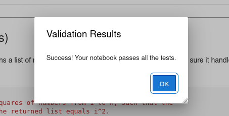
If it doesn’t pass all the tests, you’ll get a message telling you which cells failed:
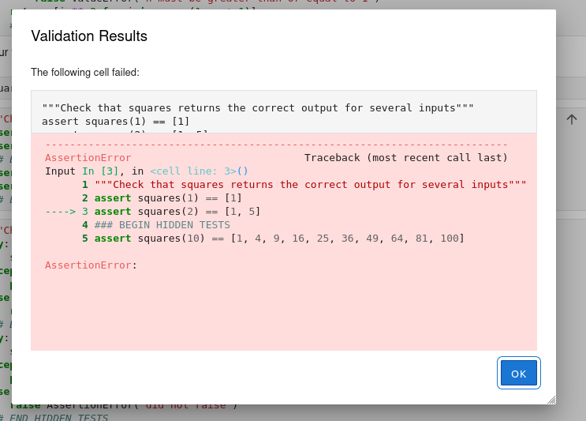
From the command line#
You can also validate assignments on the command line using the nbgrader validate command:
%%bash
nbgrader validate source/ps1/*.ipynb
[ValidateApp | INFO] Validating '/Users/langlois/2026/ens/L3-AlgoGraphes/ComputerLab-L3/.venv/lib/py
thon3.13/site-packages/nbgrader/docs/source/user_guide/source/ps1/problem1.ipynb'
[IPKernelApp] WARNING | Kernel is running over TCP without encryption. All communication (including
code and outputs) is sent in plain text and is susceptible to eavesdropping. Use IPC transport or la
unch with kernel manager-provisioned CurveZMQ keys to enable transport encryption.
[ValidateApp | INFO] Validating '/Users/langlois/2026/ens/L3-AlgoGraphes/ComputerLab-L3/.venv/lib/py
thon3.13/site-packages/nbgrader/docs/source/user_guide/source/ps1/problem2.ipynb'
[IPKernelApp] WARNING | Kernel is running over TCP without encryption. All communication (including
code and outputs) is sent in plain text and is susceptible to eavesdropping. Use IPC transport or la
unch with kernel manager-provisioned CurveZMQ keys to enable transport encryption.
Success! Your notebook passes all the tests.
Success! Your notebook passes all the tests.
Generate and release an assignment#
From the formgrader#
After an assignment has been created with the assignment toolbar, you will want to generate the version that students will receive. You can do this from the formgrader by clicking the “generate” button:
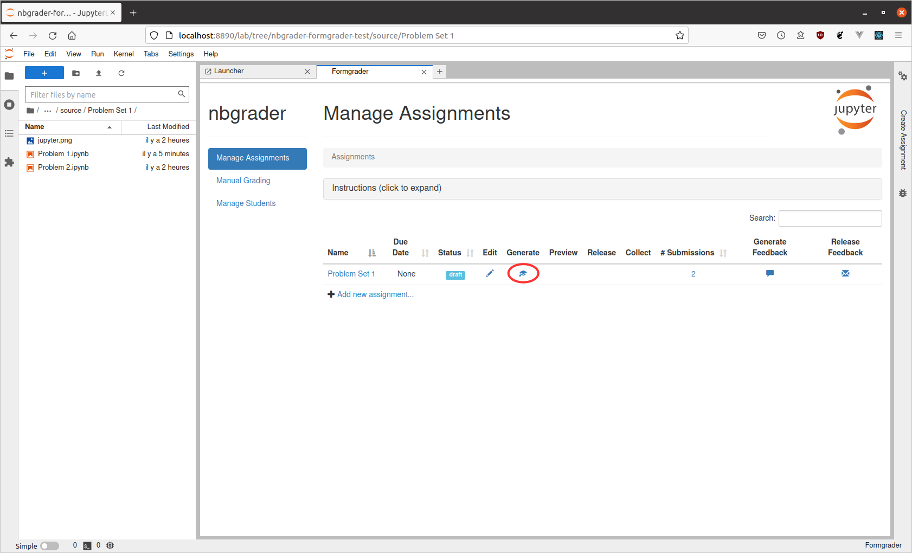
This should succeed with a pop-up window containing log output:
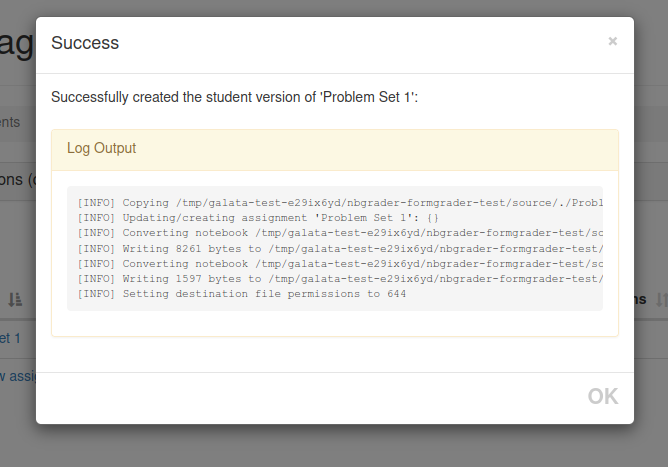
From the command line#
{course_directory}/source/{assignment_id}/{notebook_id}.ipynb
Note: The student_id is not included here because the source and release versions of the assignment are the same for all students.
After running nbgrader generate_assignment, the release version of the notebooks will be:
{course_directory}/release/{assignment_id}/{notebook_id}.ipynb
As a reminder, the instructor is responsible for distributing this release version to their students using their institution’s existing student communication and document distribution infrastructure.
When running nbgrader generate_assignment, the assignment name (which is “ps1”) is passed. We also specify a header notebook (source/header.ipynb) to prepend at the beginning of each notebook in the assignment. By default, this command should be run from the root of the course directory:
%%bash
nbgrader generate_assignment "ps1" --IncludeHeaderFooter.header=source/header.ipynb --force
[GenerateAssignmentApp | WARNING] Removing existing assignment: /Users/langlois/2026/ens/L3-AlgoGrap
hes/ComputerLab-L3/.venv/lib/python3.13/site-packages/nbgrader/docs/source/user_guide/release/ps1
[GenerateAssignmentApp | INFO] Copying /Users/langlois/2026/ens/L3-AlgoGraphes/ComputerLab-L3/.venv/
lib/python3.13/site-packages/nbgrader/docs/source/user_guide/source/./ps1/jupyter.png -> /Users/lang
lois/2026/ens/L3-AlgoGraphes/ComputerLab-L3/.venv/lib/python3.13/site-packages/nbgrader/docs/source/
user_guide/release/./ps1/jupyter.png
[GenerateAssignmentApp | INFO] Updating/creating assignment 'ps1': {}
[GenerateAssignmentApp | INFO] Converting notebook /Users/langlois/2026/ens/L3-AlgoGraphes/ComputerL
ab-L3/.venv/lib/python3.13/site-packages/nbgrader/docs/source/user_guide/source/./ps1/problem1.ipynb
[GenerateAssignmentApp | INFO] Writing 8515 bytes to /Users/langlois/2026/ens/L3-AlgoGraphes/Compute
rLab-L3/.venv/lib/python3.13/site-packages/nbgrader/docs/source/user_guide/release/ps1/problem1.ipyn
b
[GenerateAssignmentApp | INFO] Converting notebook /Users/langlois/2026/ens/L3-AlgoGraphes/ComputerL
ab-L3/.venv/lib/python3.13/site-packages/nbgrader/docs/source/user_guide/source/./ps1/problem2.ipynb
[GenerateAssignmentApp | INFO] Writing 2416 bytes to /Users/langlois/2026/ens/L3-AlgoGraphes/Compute
rLab-L3/.venv/lib/python3.13/site-packages/nbgrader/docs/source/user_guide/release/ps1/problem2.ipyn
b
[GenerateAssignmentApp | INFO] Setting destination file permissions to 644
Preview the student version#
After generating the student version of assignment, you should preview it to make sure that it looks correct. You can do this from the formgrader extension by clicking the “preview” button:
Under the hood, there will be a new folder called release with the same structure as source. The release folder contains the actual release version of the assignment files:
If you are working on the command line, you may want to formally verify the student version as well. Ideally, all the tests should fail in the student version if the student hasn’t implemented anything. To verify that this is in fact the case, we can use the nbgrader validate --invert command:
%%bash
nbgrader validate --invert release/ps1/*.ipynb
[ValidateApp | INFO] Validating '/Users/langlois/2026/ens/L3-AlgoGraphes/ComputerLab-L3/.venv/lib/py
thon3.13/site-packages/nbgrader/docs/source/user_guide/release/ps1/problem1.ipynb'
[IPKernelApp] WARNING | Kernel is running over TCP without encryption. All communication (including
code and outputs) is sent in plain text and is susceptible to eavesdropping. Use IPC transport or la
unch with kernel manager-provisioned CurveZMQ keys to enable transport encryption.
[ValidateApp | INFO] Validating '/Users/langlois/2026/ens/L3-AlgoGraphes/ComputerLab-L3/.venv/lib/py
thon3.13/site-packages/nbgrader/docs/source/user_guide/release/ps1/problem2.ipynb'
[IPKernelApp] WARNING | Kernel is running over TCP without encryption. All communication (including
code and outputs) is sent in plain text and is susceptible to eavesdropping. Use IPC transport or la
unch with kernel manager-provisioned CurveZMQ keys to enable transport encryption.
Success! The notebook does not pass any tests.
Success! The notebook does not pass any tests.
If the notebook fails all the test cases, you should see the message “Success! The notebook does not pass any tests.”
Releasing files to students and collecting submissions#
submitted/{student_id}/{assignment_id}/{notebook_id}.ipynb
Please note: Students must use version 3 or greater of the IPython/Jupyter notebook for nbgrader to work properly. If they are not using version 3 or greater, it is possible for them to delete cells that contain important metadata for nbgrader. With version 3 or greater, there is a feature in the notebook that prevents cells from being deleted. See this issue for more details.
To ensure that students have a recent enough version of the notebook, you can include a cell such as the following in each notebook of the assignment:
import IPython
assert IPython.version_info[0] >= 3, "Your version of IPython is too old, please update it."
Autograde assignments#
In the following example, we have an assignment with two notebooks. There are two submissions of the assignment:
Submission 1:
Submission 2:
From the formgrader#
You can autograde individual submissions from the formgrader directly. To do so, click on the the number of submissions in the “Manage Assignments” view:
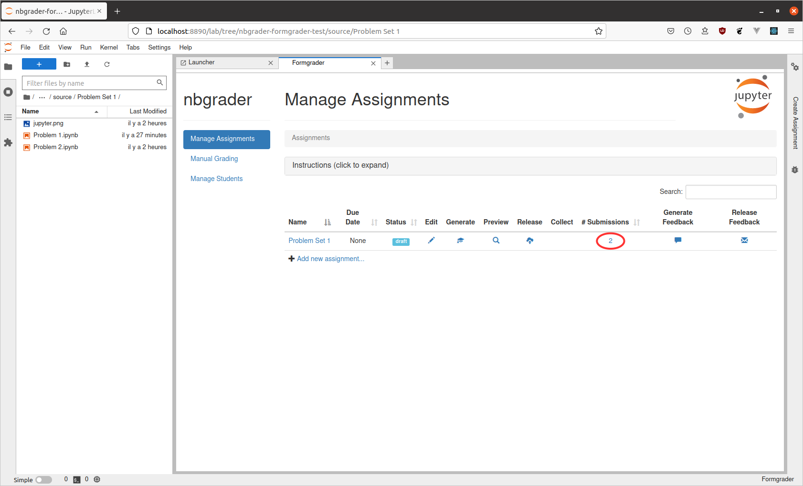
This will take you to a new page where you can see all the submissions. For a particular submission, click the “autograde” button to autograde it:
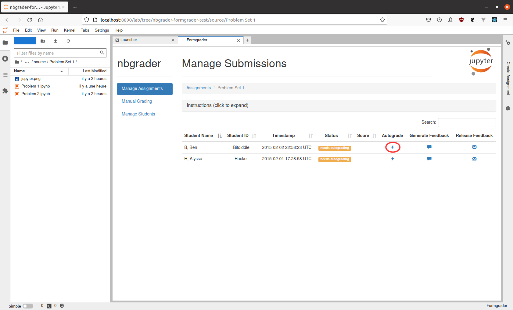
After autograding completes, you will see a pop-up window with log output:
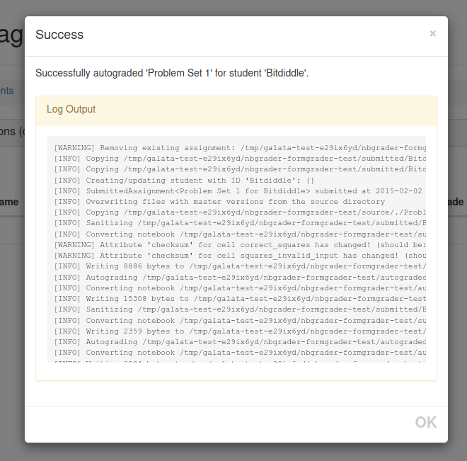
And back on the submissions screen, you will see that the status of the submission has changed to “needs manual grading” and there is now a reported score as well:
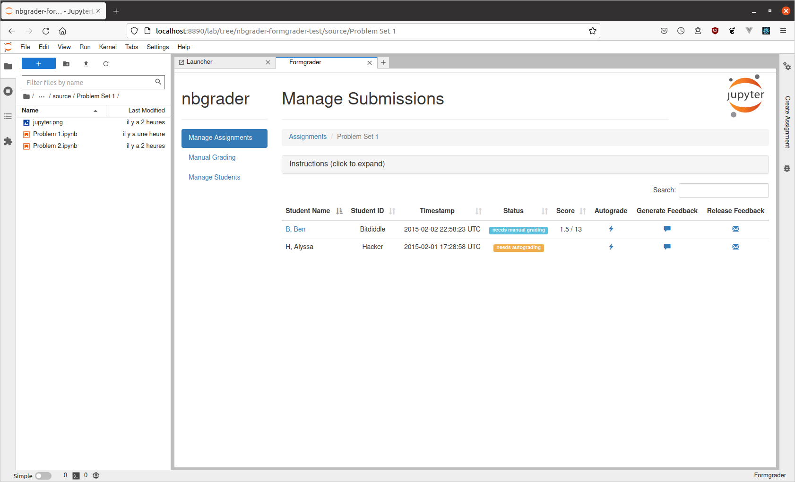
From the command line#
We can run the autograder for all students at once from the command line:
%%bash
nbgrader autograde "ps1" --force
[AutogradeApp | WARNING] Removing existing assignment: /Users/langlois/2026/ens/L3-AlgoGraphes/Compu
terLab-L3/.venv/lib/python3.13/site-packages/nbgrader/docs/source/user_guide/autograded/bitdiddle/ps
1
[AutogradeApp | INFO] Copying /Users/langlois/2026/ens/L3-AlgoGraphes/ComputerLab-L3/.venv/lib/pytho
n3.13/site-packages/nbgrader/docs/source/user_guide/submitted/bitdiddle/ps1/timestamp.txt -> /Users/
langlois/2026/ens/L3-AlgoGraphes/ComputerLab-L3/.venv/lib/python3.13/site-packages/nbgrader/docs/sou
rce/user_guide/autograded/bitdiddle/ps1/timestamp.txt
[AutogradeApp | INFO] Copying /Users/langlois/2026/ens/L3-AlgoGraphes/ComputerLab-L3/.venv/lib/pytho
n3.13/site-packages/nbgrader/docs/source/user_guide/submitted/bitdiddle/ps1/jupyter.png -> /Users/la
nglois/2026/ens/L3-AlgoGraphes/ComputerLab-L3/.venv/lib/python3.13/site-packages/nbgrader/docs/sourc
e/user_guide/autograded/bitdiddle/ps1/jupyter.png
[AutogradeApp | INFO] Creating/updating student with ID 'bitdiddle': {}
/Users/langlois/2026/ens/L3-AlgoGraphes/AlgoAvancee-ComputerLab/.venv/lib/python3.13/site-packages/n
bgrader/api.py:2255: SAWarning: Object of type <SubmittedAssignment> not in session, add operation a
long 'Student.submissions' will not proceed (This warning originated from the Session 'autoflush' pr
ocess, which was invoked automatically in response to a user-initiated operation. Consider using ``n
o_autoflush`` context manager if this warning happened while initializing objects.)
for notebook i
n submission.assignment.notebooks:
/Users/langlois/2026/ens/L3-AlgoGraphes/AlgoAvancee-ComputerLab/.venv/lib/python3.13/site-packages/n
bgrader/api.py:2255: SAWarning: Object of type <SubmittedAssignment> not in session, add operation a
long 'Assignment.submissions' will not proceed (This warning originated from the Session 'autoflush'
process, which was invoked automatically in response to a user-initiated operation. Consider using
``no_autoflush`` context manager if this warning happened while initializing objects.)
for noteboo
k in submission.assignment.notebooks:
/Users/langlois/2026/ens/L3-AlgoGraphes/AlgoAvancee-ComputerLab/.venv/lib/python3.13/site-packages/n
bgrader/api.py:149: SAWarning: Object of type <SubmittedNotebook> not in session, add operation alon
g 'Notebook.submissions' will not proceed (This warning originated from the Session 'autoflush' proc
ess, which was invoked automatically in response to a user-initiated operation. Consider using ``no_
autoflush`` context manager if this warning happened while initializing objects.)
return [x for x
in self._base_cells if isinstance(x, GradeCell)]
[AutogradeApp | INFO] SubmittedAssignment<ps1 for bitdiddle> submitted at 2015-02-02 22:58:23.948203
[AutogradeApp | INFO] Overwriting files with master versions from the source directory
[AutogradeApp | INFO] Copying /Users/langlois/2026/ens/L3-AlgoGraphes/ComputerLab-L3/.venv/lib/pytho
n3.13/site-packages/nbgrader/docs/source/user_guide/source/./ps1/jupyter.png -> /Users/langlois/2026
/ens/L3-AlgoGraphes/ComputerLab-L3/.venv/lib/python3.13/site-packages/nbgrader/docs/source/user_guid
e/autograded/bitdiddle/ps1/jupyter.png
[AutogradeApp | INFO] Sanitizing /Users/langlois/2026/ens/L3-AlgoGraphes/ComputerLab-L3/.venv/lib/py
thon3.13/site-packages/nbgrader/docs/source/user_guide/submitted/bitdiddle/ps1/problem1.ipynb
[AutogradeApp | INFO] Converting notebook /Users/langlois/2026/ens/L3-AlgoGraphes/ComputerLab-L3/.ve
nv/lib/python3.13/site-packages/nbgrader/docs/source/user_guide/submitted/bitdiddle/ps1/problem1.ipy
nb
[AutogradeApp | WARNING] Attribute 'checksum' for cell correct_squares has changed! (should be: 8f41
dd0f9c8fd2da8e8708d73e506b3a, got: 845d4666cabb30b6c75fc534f7375bf5)
[AutogradeApp | WARNING] Attribute 'checksum' for cell squares_invalid_input has changed! (should be
: 23c2b667d3b60eff3be46eb3290a6b4a, got: 123394e73f33a622ec057e2eae51a54a)
[AutogradeApp | INFO] Writing 8886 bytes to /Users/langlois/2026/ens/L3-AlgoGraphes/ComputerLab-L3/.
venv/lib/python3.13/site-packages/nbgrader/docs/source/user_guide/autograded/bitdiddle/ps1/problem1.
ipynb
[AutogradeApp | INFO] Autograding /Users/langlois/2026/ens/L3-AlgoGraphes/ComputerLab-L3/.venv/lib/p
ython3.13/site-packages/nbgrader/docs/source/user_guide/autograded/bitdiddle/ps1/problem1.ipynb
[AutogradeApp | INFO] Converting notebook /Users/langlois/2026/ens/L3-AlgoGraphes/ComputerLab-L3/.ve
nv/lib/python3.13/site-packages/nbgrader/docs/source/user_guide/autograded/bitdiddle/ps1/problem1.ip
ynb
[IPKernelApp] WARNING | Kernel is running over TCP without encryption. All communication (including
code and outputs) is sent in plain text and is susceptible to eavesdropping. Use IPC transport or la
unch with kernel manager-provisioned CurveZMQ keys to enable transport encryption.
[AutogradeApp | INFO] Writing 15538 bytes to /Users/langlois/2026/ens/L3-AlgoGraphes/ComputerLab-L3/
.venv/lib/python3.13/site-packages/nbgrader/docs/source/user_guide/autograded/bitdiddle/ps1/problem1
.ipynb
[AutogradeApp | INFO] Sanitizing /Users/langlois/2026/ens/L3-AlgoGraphes/ComputerLab-L3/.venv/lib/py
thon3.13/site-packages/nbgrader/docs/source/user_guide/submitted/bitdiddle/ps1/problem2.ipynb
[Autog
radeApp | INFO] Converting notebook /Users/langlois/2026/ens/L3-AlgoGraphes/ComputerLab-L3/.venv/lib
/python3.13/site-packages/nbgrader/docs/source/user_guide/submitted/bitdiddle/ps1/problem2.ipynb
[AutogradeApp | INFO] Writing 2359 bytes to /Users/langlois/2026/ens/L3-AlgoGraphes/ComputerLab-L3/.
venv/lib/python3.13/site-packages/nbgrader/docs/source/user_guide/autograded/bitdiddle/ps1/problem2.
ipynb
[AutogradeApp | INFO] Autograding /Users/langlois/2026/ens/L3-AlgoGraphes/ComputerLab-L3/.venv/lib/p
ython3.13/site-packages/nbgrader/docs/source/user_guide/autograded/bitdiddle/ps1/problem2.ipynb
[AutogradeApp | INFO] Converting notebook /Users/langlois/2026/ens/L3-AlgoGraphes/ComputerLab-L3/.ve
nv/lib/python3.13/site-packages/nbgrader/docs/source/user_guide/autograded/bitdiddle/ps1/problem2.ip
ynb
[IPKernelApp] WARNING | Kernel is running over TCP without encryption. All communication (including
code and outputs) is sent in plain text and is susceptible to eavesdropping. Use IPC transport or la
unch with kernel manager-provisioned CurveZMQ keys to enable transport encryption.
[AutogradeApp | INFO] Writing 2885 bytes to /Users/langlois/2026/ens/L3-AlgoGraphes/ComputerLab-L3/.
venv/lib/python3.13/site-packages/nbgrader/docs/source/user_guide/autograded/bitdiddle/ps1/problem2.
ipynb
[AutogradeApp | INFO] Setting destination file permissions to 444
[AutogradeApp | WARNING] Removing
existing assignment: /Users/langlois/2026/ens/L3-AlgoGraphes/ComputerLab-L3/.venv/lib/python3.13/sit
e-packages/nbgrader/docs/source/user_guide/autograded/hacker/ps1
[AutogradeApp | INFO] Copying /Users/langlois/2026/ens/L3-AlgoGraphes/ComputerLab-L3/.venv/lib/pytho
n3.13/site-packages/nbgrader/docs/source/user_guide/submitted/hacker/ps1/timestamp.txt -> /Users/lan
glois/2026/ens/L3-AlgoGraphes/ComputerLab-L3/.venv/lib/python3.13/site-packages/nbgrader/docs/source
/user_guide/autograded/hacker/ps1/timestamp.txt
[AutogradeApp | INFO] Copying /Users/langlois/2026/ens/L3-AlgoGraphes/ComputerLab-L3/.venv/lib/pytho
n3.13/site-packages/nbgrader/docs/source/user_guide/submitted/hacker/ps1/jupyter.png -> /Users/langl
ois/2026/ens/L3-AlgoGraphes/ComputerLab-L3/.venv/lib/python3.13/site-packages/nbgrader/docs/source/u
ser_guide/autograded/hacker/ps1/jupyter.png
[AutogradeApp | INFO] Creating/updating student with ID 'hacker': {}
[AutogradeApp | INFO] SubmittedAssignment<ps1 for hacker> submitted at 2015-02-01 17:28:58.749302
[AutogradeApp | INFO] Overwriting files with master versions from the source directory
[AutogradeApp | INFO] Copying /Users/langlois/2026/ens/L3-AlgoGraphes/ComputerLab-L3/.venv/lib/pytho
n3.13/site-packages/nbgrader/docs/source/user_guide/source/./ps1/jupyter.png -> /Users/langlois/2026
/ens/L3-AlgoGraphes/ComputerLab-L3/.venv/lib/python3.13/site-packages/nbgrader/docs/source/user_guid
e/autograded/hacker/ps1/jupyter.png
[AutogradeApp | INFO] Sanitizing /Users/langlois/2026/ens/L3-AlgoGraphes/ComputerLab-L3/.venv/lib/py
thon3.13/site-packages/nbgrader/docs/source/user_guide/submitted/hacker/ps1/problem1.ipynb
[AutogradeApp | INFO] Converting notebook /Users/langlois/2026/ens/L3-AlgoGraphes/ComputerLab-L3/.ve
nv/lib/python3.13/site-packages/nbgrader/docs/source/user_guide/submitted/hacker/ps1/problem1.ipynb
[AutogradeApp | INFO] Writing 9481 bytes to /Users/langlois/2026/ens/L3-AlgoGraphes/ComputerLab-L3/.
venv/lib/python3.13/site-packages/nbgrader/docs/source/user_guide/autograded/hacker/ps1/problem1.ipy
nb
[AutogradeApp | INFO] Autograding /Users/langlois/2026/ens/L3-AlgoGraphes/ComputerLab-L3/.venv/lib/p
ython3.13/site-packages/nbgrader/docs/source/user_guide/autograded/hacker/ps1/problem1.ipynb
[AutogradeApp | INFO] Converting notebook /Users/langlois/2026/ens/L3-AlgoGraphes/ComputerLab-L3/.ve
nv/lib/python3.13/site-packages/nbgrader/docs/source/user_guide/autograded/hacker/ps1/problem1.ipynb
[IPKernelApp] WARNING | Kernel is running over TCP without encryption. All communication (including
code and outputs) is sent in plain text and is susceptible to eavesdropping. Use IPC transport or la
unch with kernel manager-provisioned CurveZMQ keys to enable transport encryption.
[AutogradeApp | INFO] Writing 13479 bytes to /Users/langlois/2026/ens/L3-AlgoGraphes/ComputerLab-L3/
.venv/lib/python3.13/site-packages/nbgrader/docs/source/user_guide/autograded/hacker/ps1/problem1.ip
ynb
[AutogradeApp | INFO] Sanitizing /Users/langlois/2026/ens/L3-AlgoGraphes/ComputerLab-L3/.venv/lib/py
thon3.13/site-packages/nbgrader/docs/source/user_guide/submitted/hacker/ps1/problem2.ipynb
[Autograd
eApp | INFO] Converting notebook /Users/langlois/2026/ens/L3-AlgoGraphes/ComputerLab-L3/.venv/lib/py
thon3.13/site-packages/nbgrader/docs/source/user_guide/submitted/hacker/ps1/problem2.ipynb
[AutogradeApp | INFO] Writing 2489 bytes to /Users/langlois/2026/ens/L3-AlgoGraphes/ComputerLab-L3/.
venv/lib/python3.13/site-packages/nbgrader/docs/source/user_guide/autograded/hacker/ps1/problem2.ipy
nb
[AutogradeApp | INFO] Autograding /Users/langlois/2026/ens/L3-AlgoGraphes/ComputerLab-L3/.venv/lib/p
ython3.13/site-packages/nbgrader/docs/source/user_guide/autograded/hacker/ps1/problem2.ipynb
[AutogradeApp | INFO] Converting notebook /Users/langlois/2026/ens/L3-AlgoGraphes/ComputerLab-L3/.ve
nv/lib/python3.13/site-packages/nbgrader/docs/source/user_guide/autograded/hacker/ps1/problem2.ipynb
[IPKernelApp] WARNING | Kernel is running over TCP without encryption. All communication (including
code and outputs) is sent in plain text and is susceptible to eavesdropping. Use IPC transport or la
unch with kernel manager-provisioned CurveZMQ keys to enable transport encryption.
[AutogradeApp | INFO] Writing 3015 bytes to /Users/langlois/2026/ens/L3-AlgoGraphes/ComputerLab-L3/.
venv/lib/python3.13/site-packages/nbgrader/docs/source/user_guide/autograded/hacker/ps1/problem2.ipy
nb
[AutogradeApp | INFO] Setting destination file permissions to 444
When grading the submission for Bitdiddle, you’ll see some warnings that look like “Checksum for grade cell correct_squares has changed!”. What’s happening here is that nbgrader has recorded what the original contents of the grade cell correct_squares (when nbgrader generate_assignment was run), and is checking the submitted version against this original version. It has found that the submitted version changed (perhaps this student tried to cheat by commenting out the failing tests), and has therefore overwritten the submitted version of the tests with the original version of the tests.
You may also notice that there is a note saying “ps1 for Bitdiddle is 21503.948203 seconds late”. What is happening here is that nbgrader is detecting a file in Bitdiddle’s submission called timestamp.txt, reading in that timestamp, and saving it into the database. From there, it can compare the timestamp to the duedate of the problem set, and compute whether the submission is at all late.
Once the autograding is complete, there will be new directories for the autograded versions of the submissions:
autograded/{student_id}/{assignment_id}/{notebook_id}.ipynb
Autograded submission 1:
Autograded submission 2:
Manual grading#
After running nbgrader autograde, the autograded version of the
notebooks will be:
autograded/{student_id}/{assignment_id}/{notebook_id}.ipynb
We can manually grade assignments through the formgrader as well, by clicking on the “Manual Grading” navigation button. This will provide you with an interface for hand grading assignments that it finds in the directory listed above. Note that this applies to all assignments as well – as long as the autograder has been run on the assignment, it will be available for manual grading via the formgrader.
Generate feedback on assignments#
autograded/{student_id}/{assignment_id}/{notebook_id}.ipynb
Creating feedback for students is divided into two parts:
generate feedback
release feedback
Generating feedback will create HTML files in the local instructor directory. Releasing feedback will copy those HTML files to the nbgrader exchange.
We can generate feedback based on the graded notebooks by running the nbgrader generate_feedback command, which will produce HTML versions of these notebooks at the following location:
feedback/{student_id}/{assignment_id}/{notebook_id}.html
The nbgrader generate_feedback is available by clicking the Generate Feedback button on either the Manage Assignments view (to generate feedback for all graded submissions), or on the individual student’s Manage Submission page (to generate feedback for that specific individual).
We can release the generated feedback by running the nbgrader release_feedback command, which will send the generated HTML files to the nbgrader exchange.
The nbgrader release_feedback is available by clicking the Release Feedback button on either the Manage Assignments view (to release feedback for all generated feedback), or on the individual student’s Manage Submission page (to release feedback for that specific individual).
Workflow example: Instructor returning feedback to students#
In some scenarios, you may not want to (or be able to) use the exchange to deliver student feedback. This sections describes a workflow for manually returning generated feedback.
In the following example, we have an assignment with two notebooks. There are two submissions of the assignment that have been graded:
Autograded submission 1:
Autograded submission 2:
Generating feedback is fairly straightforward (and as with the other nbgrader commands for instructors, this must be run from the root of the course directory):
%%bash
nbgrader generate_feedback "ps1"
[GenerateFeedbackApp | INFO] Skipping existing assignment: /Users/langlois/2026/ens/L3-AlgoGraphes/C
omputerLab-L3/.venv/lib/python3.13/site-packages/nbgrader/docs/source/user_guide/feedback/bitdiddle/
ps1
[GenerateFeedbackApp | INFO] Skipping existing assignment: /Users/langlois/2026/ens/L3-AlgoGraphes/C
omputerLab-L3/.venv/lib/python3.13/site-packages/nbgrader/docs/source/user_guide/feedback/hacker/ps1
Once the feedback has been generated, there will be new directories and HTML files corresponding to each notebook in each submission:
Feedback for submission 1:
Feedback for submission 2:
If the exchange is available, one would of course use nbgrader release_feedback. However if not available, you can now deliver these generated HTML feedback files via whatever mechanism you wish.
Getting grades from the database#
In addition to creating feedback for the students, you may need to upload grades to whatever learning management system your school uses (e.g. Canvas, Blackboard, etc.). nbgrader provides a way to export grades to CSV out of the box, with the nbgrader export command:
%%bash
nbgrader export
[ExportApp | INFO] Using exporter: CsvExportPlugin
[ExportApp | INFO] Exporting grades to grades.csv
After running nbgrader export, you will see the grades in a CSV file called grades.csv:
%%bash
cat grades.csv
assignment,duedate,timestamp,student_id,last_name,first_name,email,raw_score,late_submission_penalty
,score,max_score
ps1,,2015-02-02 22:58:23.948203,bitdiddle,,,,1.5,0.0,1.5,13.0
ps1,,2015-02-01 17:28
:58.749302,hacker,,,,3.0,0.0,3.0,13.0